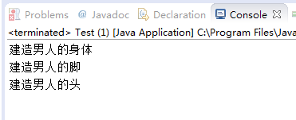
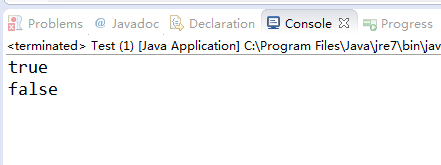

(点击上方公众号，可快速关注)
来源：小宝鸽
链接：http://blog.csdn.net/u013142781/article/details/50816245
一、概况
总体来说设计模式分为三大类：
（1）创建型模式，共五种：工厂方法模式、抽象工厂模式、单例模式、建造者模式、原型模式。
（2）结构型模式，共七种：适配器模式、装饰器模式、代理模式、外观模式、桥接模式、组合模式、享元模式。
（3）行为型模式，共十一种：策略模式、模板方法模式、观察者模式、迭代子模式、责任链模式、命令模式、备忘录模式、状态模式、访问者模式、中介者模式、解释器模式。
二、设计模式的六大原则
1、开闭原则（Open Close Principle）
开闭原则就是说对扩展开放，对修改关闭。在程序需要进行拓展的时候，不能去修改原有的代码，实现一个热插拔的效果。
2、里氏代换原则（Liskov Substitution Principle）
其官方描述比较抽象，可自行百度。实际上可以这样理解：（1）子类的能力必须大于等于父类，即父类可以使用的方法，子类都可以使用。（2）返回值也是同样的道理。假设一个父类方法返回一个List，子类返回一个ArrayList，这当然可以。如果父类方法返回一个ArrayList，子类返回一个List，就说不通了。这里子类返回值的能力是比父类小的。（3）还有抛出异常的情况。任何子类方法可以声明抛出父类方法声明异常的子类。
而不能声明抛出父类没有声明的异常。
3、依赖倒转原则（Dependence Inversion Principle）
这个是开闭原则的基础，具体内容：面向接口编程，依赖于抽象而不依赖于具体。
4、接口隔离原则（Interface Segregation Principle）
这个原则的意思是：使用多个隔离的接口，比使用单个接口要好。还是一个降低类之间的耦合度的意思，从这儿我们看出，其实设计模式就是一个软件的设计思想，从大型软件架构出发，为了升级和维护方便。所以上文中多次出现：降低依赖，降低耦合。
5、迪米特法则（最少知道原则）（Demeter Principle）
为什么叫最少知道原则，就是说：一个实体应当尽量少的与其他实体之间发生相互作用，使得系统功能模块相对独立。
6、合成复用原则（Composite Reuse Principle）
原则是尽量使用合成/聚合的方式，而不是使用继承。
三、创建型模式
创建型模式，共五种：工厂方法模式、抽象工厂模式、单例模式、建造者模式、原型模式。
3.1、工厂方法模式
工厂方法模式分为三种：普通工厂模式、多个工厂方法模式和静态工厂方法模式。
3.1.1、普通工厂模式
普通工厂模式就是建立一个工厂类，对实现了同一接口的一些类进行实例的创建。
package com.mode.create;
public interface MyInterface {
public void print();
}
package com.mode.create;
public class MyClassOne implements MyInterface {
@Override
public void print() {
System.out.println("MyClassOne");
}
}
package com.mode.create;
public class MyClassTwo implements MyInterface {
@Override
public void print() {
System.out.println("MyClassTwo");
}
}
package com.mode.create;
public class MyFactory {
public MyInterface produce(String type) {
if ("One".equals(type)) {
return new MyClassOne();
} else if ("Two".equals(type)) {
return new MyClassTwo();
} else {
System.out.println("没有要找的类型");
return null;
}
}
}
package com.mode.create;
public class FactoryTest {
public static void main(String[] args){
MyFactory factory = new MyFactory();
MyInterface myi = factory.produce("One");
myi.print();
}
}
FactoryTest的运行结果我想应该很明显了。
再回头来理解这句话：普通工厂模式就是建立一个工厂类，对实现了同一接口的一些类进行实例的创建。
3.1.2、多个工厂方法模式
多个工厂方法模式，是对普通工厂方法模式的改进，多个工厂方法模式就是提供多个工厂方法，分别创建对象。
直接看代码吧，我们修改MyFactory和FactoryTest如下：
package com.mode.create;
public class MyFactory {
public MyInterface produceOne() {
return new MyClassOne();
}
public MyInterface produceTwo() {
return new MyClassTwo();
}
}
package com.mode.create;
public class FactoryTest {
public static void main(String[] args){
MyFactory factory = new MyFactory();
MyInterface myi = factory.produceOne();
myi.print();
}
}
运行结果也是十分明显了。
再回头来理解这句话：多个工厂方法模式，是对普通工厂方法模式的改进，多个工厂方法模式就是提供多个工厂方法，分别创建对象。
3.1.3、静态工厂方法模式
静态工厂方法模式，将上面的多个工厂方法模式里的方法置为静态的，不需要创建实例，直接调用即可。
直接看代码吧，我们修改MyFactory和FactoryTest如下：
package com.mode.create;
public class MyFactory {
public static MyInterface produceOne() {
return new MyClassOne();
}
public static MyInterface produceTwo() {
return new MyClassTwo();
}
}
package com.mode.create;
public class FactoryTest {
public static void main(String[] args){
MyInterface myi = MyFactory.produceOne();
myi.print();
}
}
运行结果依旧很明显。
再回顾：静态工厂方法模式，将上面的多个工厂方法模式里的方法置为静态的，不需要创建实例，直接调用即可。
3.2、抽象工厂模式
工厂方法模式有一个问题就是，类的创建依赖工厂类，也就是说，如果想要拓展程序，必须对工厂类进行修改，这违背了闭包原则。
为解决这个问题，我们来看看抽象工厂模式：创建多个工厂类，这样一旦需要增加新的功能，直接增加新的工厂类就可以了，不需要修改之前的代码。
这样就符合闭包原则了。
下面来看看代码：
MyInterface、MyClassOne、MyClassTwo不变。
新增如下接口和类：
package com.mode.create;
public interface Provider {
public MyInterface produce();
}
package com.mode.create;
public class MyFactoryOne implements Provider {
@Override
public MyInterface produce() {
return new MyClassOne();
}
}
package com.mode.create;
public class MyFactoryTwo implements Provider {
@Override
public MyInterface produce() {
return new MyClassTwo();
}
}
修改测试类FactoryTest如下：
package com.mode.create;
public class FactoryTest {
public static void main(String[] args){
Provider provider = new MyFactoryOne();
MyInterface myi = provider.produce();
myi.print();
}
}
运行结果依旧显然。
再回顾：抽象工厂模式就是创建多个工厂类，这样一旦需要增加新的功能，直接增加新的工厂类就可以了，不需要修改之前的代码。
3.3、单例模式
单例模式，不需要过多的解释。
直接看代码吧：
package test;
public class MyObject {
private static MyObject myObject;
private MyObject() {
}
public static MyObject getInstance() {
if (myObject != null) {
} else {
myObject = new MyObject();
}
return myObject;
}
}
但是这样会引发多线程问题，详细解说可以看《Java多线程编程核心技术》书中的第六章。博主之前推荐过这本书，里面有电子完整版下载地址：http://blog.csdn.net/u013142781/article/details/50805655
3.4、建造者模式
建造者模式：是将一个复杂的对象的构建与它的表示分离，使得同样的构建过程可以创建不同的表示。
字面看来非常抽象，实际上它也十分抽象！！！！
建造者模式通常包括下面几个角色：
（1） Builder：给出一个抽象接口，以规范产品对象的各个组成成分的建造。这个接口规定要实现复杂对象的哪些部分的创建，并不涉及具体的对象部件的创建。
（2） ConcreteBuilder：实现Builder接口，针对不同的商业逻辑，具体化复杂对象的各部分的创建。 在建造过程完成后，提供产品的实例。
（3）Director：调用具体建造者来创建复杂对象的各个部分，在指导者中不涉及具体产品的信息，只负责保证对象各部分完整创建或按某种顺序创建。
（4）Product：要创建的复杂对象。
在游戏开发中建造小人是经常的事了，要求是：小人必须包括头，身体和脚。
下面我们看看如下代码：
Product（要创建的复杂对象。）：
package com.mode.create;
public class Person {
private String head;
private String body;
private String foot;
public String getHead() {
return head;
}
public void setHead(String head) {
this.head = head;
}
public String getBody() {
return body;
}
public void setBody(String body) {
this.body = body;
}
public String getFoot() {
return foot;
}
public void setFoot(String foot) {
this.foot = foot;
}
}
Builder（给出一个抽象接口，以规范产品对象的各个组成成分的建造。这个接口规定要实现复杂对象的哪些部分的创建，并不涉及具体的对象部件的创建。）：
package com.mode.create;
public interface PersonBuilder {
void buildHead();
void buildBody();
void buildFoot();
Person buildPerson();
}
ConcreteBuilder（实现Builder接口，针对不同的商业逻辑，具体化复杂对象的各部分的创建。 在建造过程完成后，提供产品的实例。）：
package com.mode.create;
public class ManBuilder implements PersonBuilder {
Person person;
public ManBuilder() {
person = new Person();
}
public void buildBody() {
person.setBody("建造男人的身体");
}
public void buildFoot() {
person.setFoot("建造男人的脚");
}
public void buildHead() {
person.setHead("建造男人的头");
}
public Person buildPerson() {
return person;
}
}
Director（调用具体建造者来创建复杂对象的各个部分，在指导者中不涉及具体产品的信息，只负责保证对象各部分完整创建或按某种顺序创建。）：
package com.mode.create;
public class PersonDirector {
public Person constructPerson(PersonBuilder pb) {
pb.buildHead();
pb.buildBody();
pb.buildFoot();
return pb.buildPerson();
}
}
测试类：
package com.mode.create;
public class Test {
public static void main(String[] args) {
PersonDirector pd = new PersonDirector();
Person person = pd.constructPerson(new ManBuilder());
System.out.println(person.getBody());
System.out.println(person.getFoot());
System.out.println(person.getHead());
}
}
运行结果：

回顾：建造者模式：是将一个复杂的对象的构建与它的表示分离，使得同样的构建过程可以创建不同的表示。
3.5、原型模式
该模式的思想就是将一个对象作为原型，对其进行复制、克隆，产生一个和原对象类似的新对象。
说道复制对象，我将结合对象的浅复制和深复制来说一下，首先需要了解对象深、浅复制的概念：
浅复制：将一个对象复制后，基本数据类型的变量都会重新创建，而引用类型，指向的还是原对象所指向的。
深复制：将一个对象复制后，不论是基本数据类型还有引用类型，都是重新创建的。简单来说，就是深复制进行了完全彻底的复制，而浅复制不彻底。
写一个深浅复制的例子：
package com.mode.create;
import java.io.ByteArrayInputStream;
import java.io.ByteArrayOutputStream;
import java.io.IOException;
import java.io.ObjectInputStream;
import java.io.ObjectOutputStream;
import java.io.Serializable;
public class Prototype implements Cloneable, Serializable {
private static final long serialVersionUID = 1L;
private int base;
private Integer obj;
/* 浅复制 */
public Object clone() throws CloneNotSupportedException {
// 因为Cloneable接口是个空接口，你可以任意定义实现类的方法名
// 如cloneA或者cloneB，因为此处的重点是super.clone()这句话
// super.clone()调用的是Object的clone()方法
// 而在Object类中，clone()是native（本地方法）的
Prototype proto = (Prototype) super.clone();
return proto;
}
/* 深复制 */
public Object deepClone() throws IOException, ClassNotFoundException {
/* 写入当前对象的二进制流 */
ByteArrayOutputStream bos = new ByteArrayOutputStream();
ObjectOutputStream oos = new ObjectOutputStream(bos);
oos.writeObject(this);
/* 读出二进制流产生的新对象 */
ByteArrayInputStream bis = new ByteArrayInputStream(bos.toByteArray());
ObjectInputStream ois = new ObjectInputStream(bis);
return ois.readObject();
}
public int getBase() {
return base;
}
public void setBase(int base) {
this.base = base;
}
public Integer getObj() {
return obj;
}
public void setObj(Integer obj) {
this.obj = obj;
}
}
测试类：
package com.mode.create;
import java.io.IOException;
public class Test {
public static void main(String[] args) throws CloneNotSupportedException,
ClassNotFoundException, IOException {
Prototype prototype = new Prototype();
prototype.setBase(1);
prototype.setObj(new Integer(2));
/* 浅复制 */
Prototype prototype1 = (Prototype) prototype.clone();
/* 深复制 */
Prototype prototype2 = (Prototype) prototype.deepClone();
System.out.println(prototype1.getObj()==prototype1.getObj());
System.out.println(prototype1.getObj()==prototype2.getObj());
}
}
运行结果：

【今日微信公号推荐↓】

更多推荐请看《值得关注的技术和设计公众号》
其中推荐了包括技术、设计、极客和IT相亲相关的热门公众号。技术涵盖：Python、Web前端、Java、安卓、iOS、PHP、C/C++、.NET、Linux、数据库、运维、大数据、算法、IT职场等。点击《值得关注的技术和设计公众号》，发现精彩！

![]()